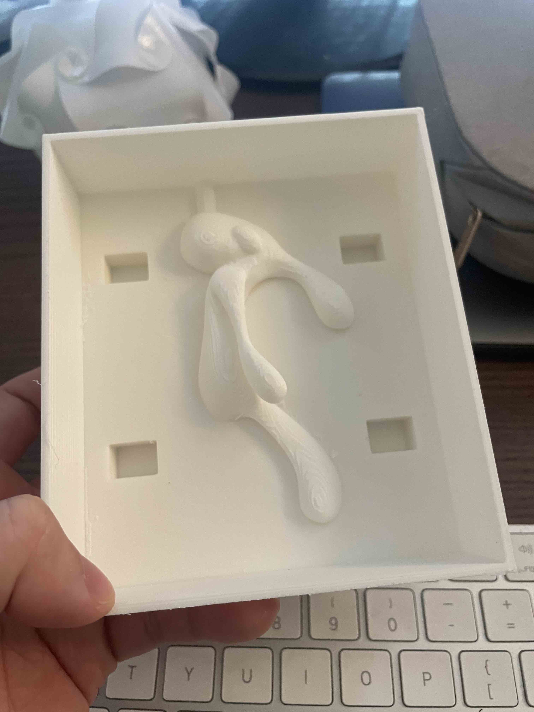
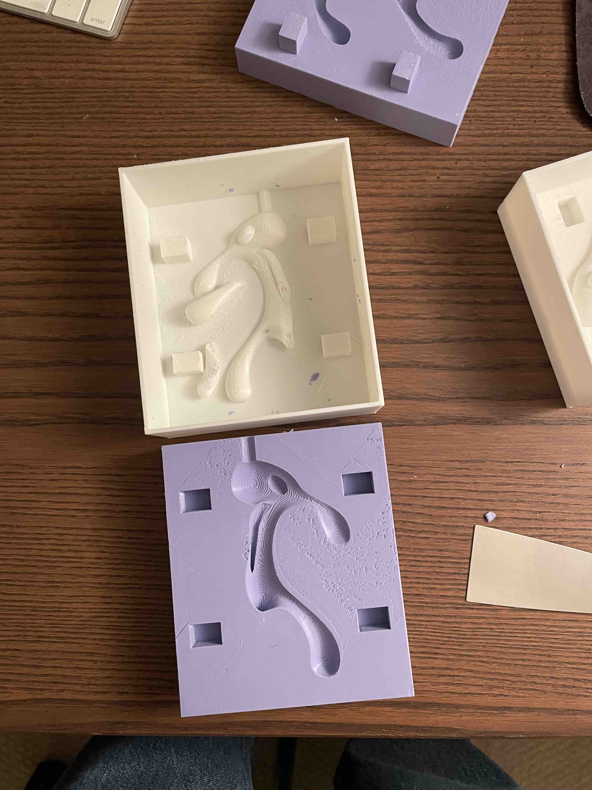
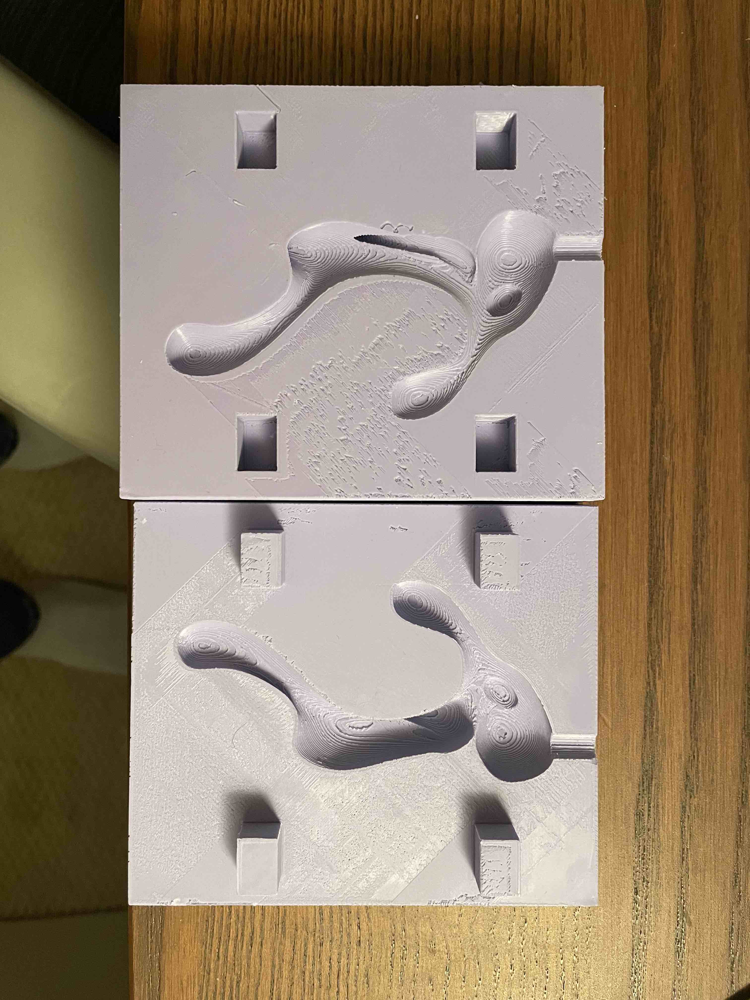
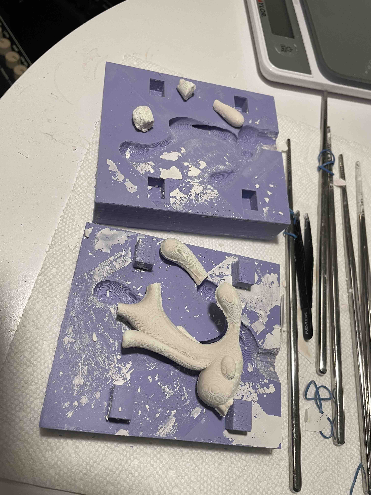
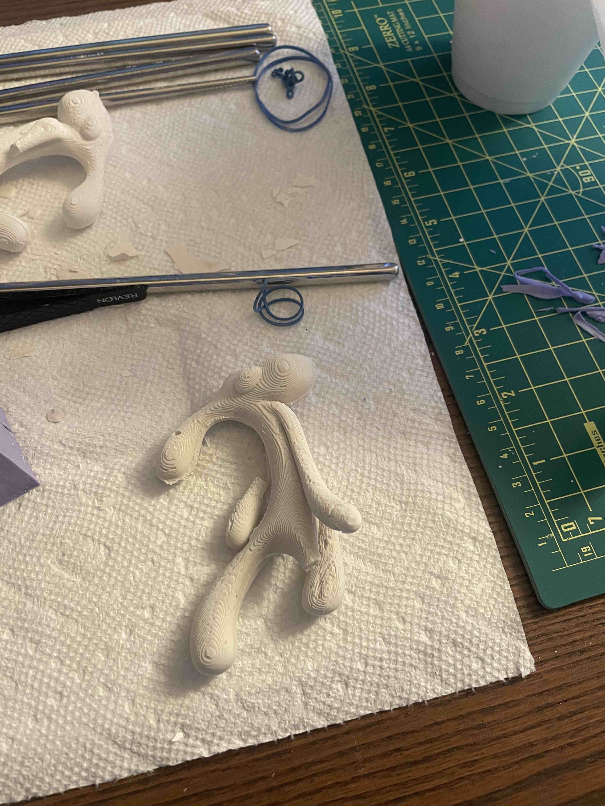
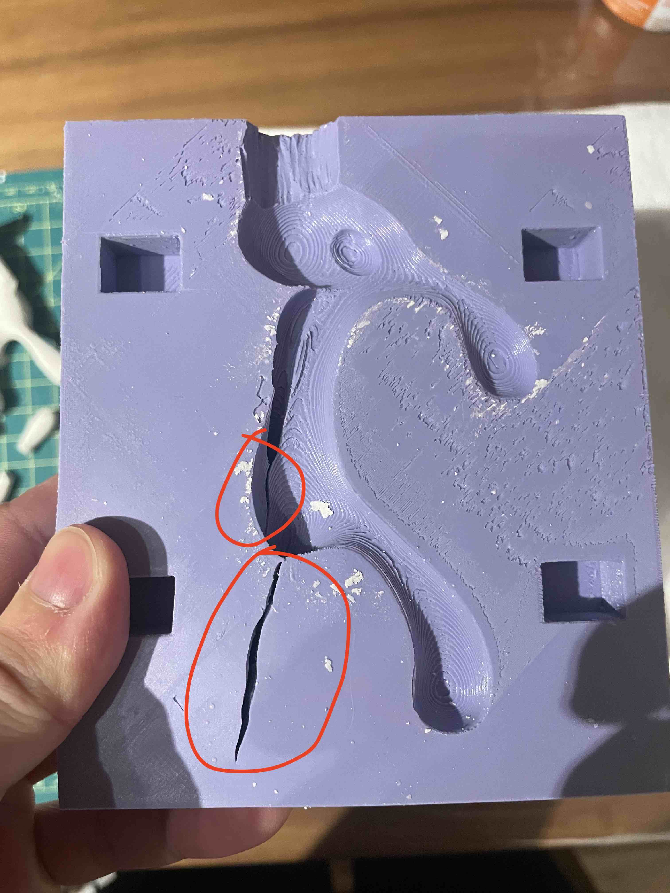
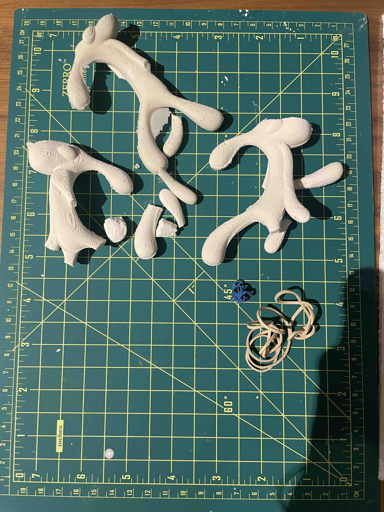
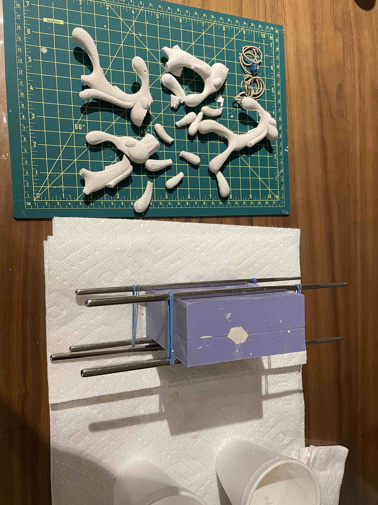
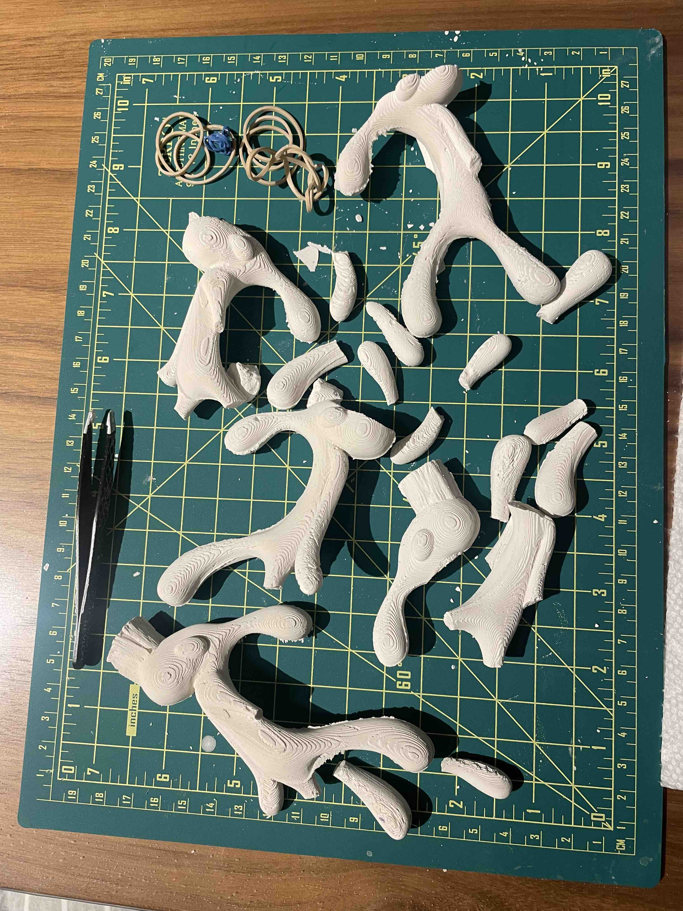
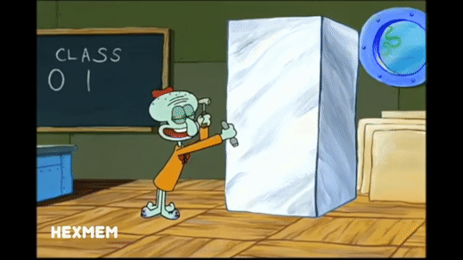

Mold

** Part 2 of lamp is in the previous assignment page (assignment 5)
I wanted to create a cast of Squidward's famous bold and brash artwork. I found an stl file of it online on Thingiverse, and decided to use it to create my molds for mold.


I used combination of MeshBooleanDifferences to create my mold halves. Originally, I created sphere keys, but MeshBooleanDifferences kept on failing and creating empty meshes. To improvise, I created rectangular keys instead.
I then proceeded to print the molds on both sides, which took about ~9 hours on each side. The print actually went pretty well, and I used my classmate Noelle's guidance on settings to use for my mold.
 The process of curing oomoo in each sides of the mold was rather simple, or so I thought. When removing the molds from the mold for molds, few parts of the mold (the arms) broke off. This was due to the mold needing to be removed vertically and the arms inside the mold being tucked under a layer of oomoo. I noted that if I were to do future projects involving molds, I would need to stick with simpler, less layered designs. However, I still managed to get the molds out correctly, albeit there were a few tears in the process.
The first process of removing the solid was a complete disaster. I tried to make the hydrostone mixture more watery for it to permeate through the mold better, but the final product became extremely difficult to remove from the mold. Again, the issue of layered interference of the arms and legs made it difficult to remove the final product from the mold. Arms and legs were broken in the process.
 The second attemp at removing the final product was a bit better, but the issue of arms and legs breaking off still persisted. To address this, I actually made incisions into the mold, so that the legs and arms would remove easier. This would not obstruct the molding process, but at the same time, made the legs and arms of the final product easier to remove.
 However, the legs and arms breaking off still proved to be major issues. I tried multiple things like waiting a bit longer until the hydrostone mixture to set, as well as creating more "solid" hydrostone mixtures and pouring it in more slowly. However, the issue of breaking still remained.

Massacred
I tried the process over and over again 5 times, but still couldn't produce solid products. I thought about how I could just air dry these parts and super glue some of these brokens parts together, but it still didn't feel right to me. In the end, I decided that it might be better to go back to square one with my molds and come up with a more simple design.
Some learnings:
- Make sure to account for degrees of freedom/interference in mold designs. The simpler and less limb-y, the better.
- Keys can play a large role in safe removal of solids - consider sliding keys for molds so that the arms can be removed without being broken
- Incisions can be made in molds, which may allow solids to be more easily removed; however, you have to be careful in not creating large tears or it will affect your solid's shape.
Documentation for Assignment 6:
Rhino file
Credit
Bold and Brash Thingiverse